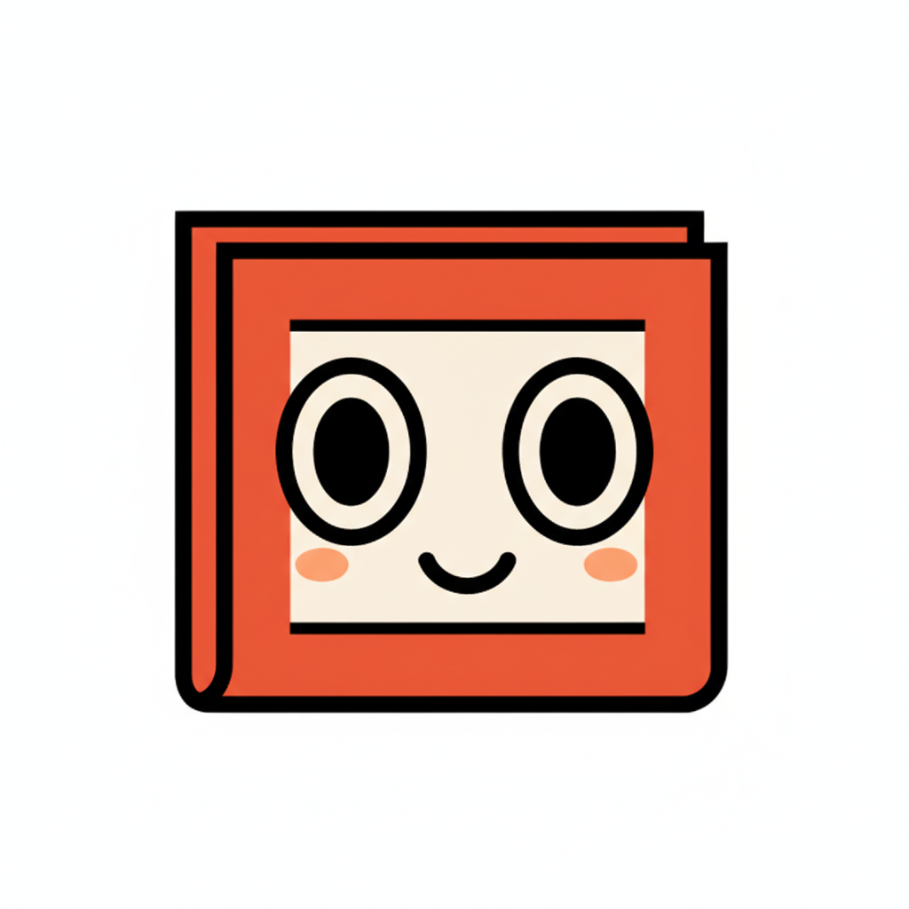
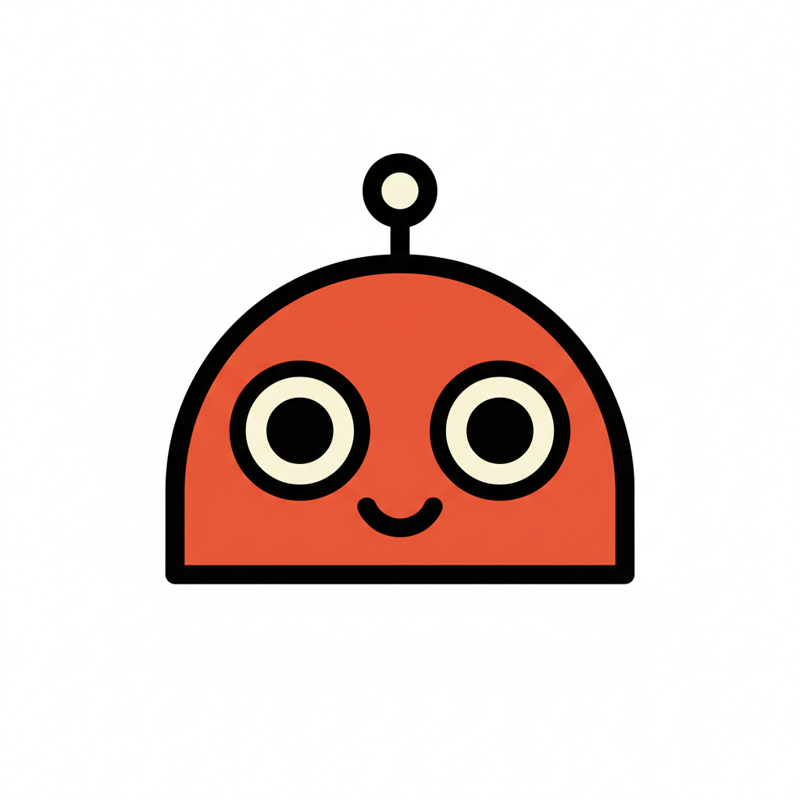
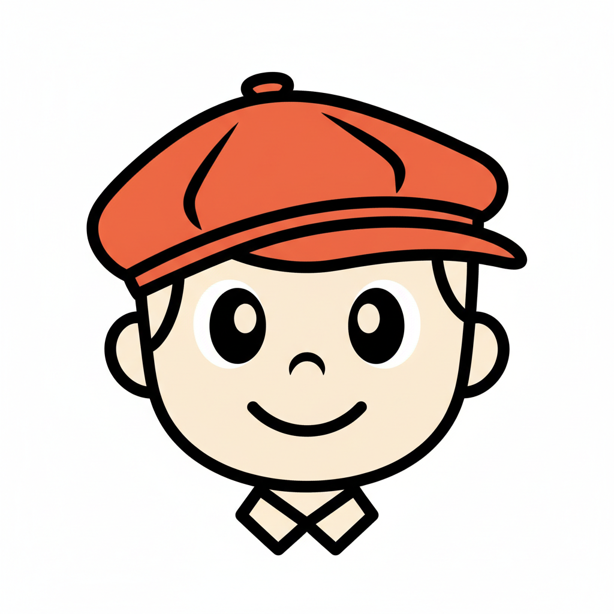

Tap each to compare — these are icon-format. The first row of each card shows what it'll look like at 28px in a tab bar.

A newspaper character. Most distinctive — ties literally to the name "Benny Byline." No one else in news has it.

Friendly retro cartoon robot. Safest choice — fits the existing Newsreel mascot universe (the clock-headed character) and signals "AI" without being cold.

A boy in a newsboy cap. Most "human" feel, bridges old-school journalism with a modern twist. Risk: reads young/dated.
Pure geometric mark — clean as a 24px icon but generic. Could be confused with a chat bubble. No personality.
My pick: Concept 1 (Byline) — most defensible brand mark, ties to the name, distinctive in news.